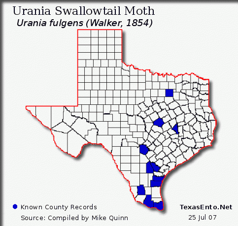

Return
to Texas Entomology - Compiled by Mike
Quinn
Urania Natural History
Primarily Urania fulgens Walker, 1854
Swallowtail Moth Family Uraniidae
Photos -
TX Records
- 1939 Migration
- Host Maps
- U.S. Data
- Similar spp.
- Bibliography
Per Smith (1983b), Urania
fulgens, like all uraniids, undergoes population explosions
and
massive migrations that may be unsurpassed by any other insect in the
Neotropics.
In Costa Rica and Panama, the first population movements may begin in
July and early August and,
depending on the year, may be very massive indeed, continuing unabated for as long as five months.
Texas and Florida Urania fulgens County
Records
|

|
Florida County Records:
Levy, Okaloosa, and Pinellas

compiled 26 Oct 2011 |
Plus Bastrop Co. TX, per B. Freeman, 2011
Plus Balmorhea State Park, Reeves Co., 2017
Observations of the largest Urania migration
to reach the United States
In July 1939 at San Benito, Cameron Co., Texas, Jack B. Prentiss
observed a migration of U. fulgens during the morning hours, in a
pasture behind his home. In a personal communication he stated, "The flight was rather
extensive; there were always a few in sight for
the better part of 4 hours. They were all flying in a due north direction. During the height of the flight they were
rather numerous;
20 to 30 could be seen at one time. Most were flying too high to be netted and
all were flying fast. Those flying low were most elusive and one had but a
single chance to net them. During the course of the flight I did manage to take
2 specimens; one was in extremely good condition, the other only fair. (Kendall,
1978)
US Urania Records by Year
Smith (1983a) reports "big or very big" Urania flights every 5.8 yrs in C. and northern S. America betw. 1901-1981.
|
| TX |
Bee Co. |
Beeville |
June 17, 1916 |
1 worn female |
1st U.S. Record (Leussler 1918) |
|
| TX |
Cameron Co. |
San Benito |
July 1939 |
A migration, 2 specimens, 1
extremely fresh, 1 fair |
|
TX
TX
TX |
Dallas Co.
Dallas Co.
Bexar Co. |
Lancaster
Lancaster
nr. San Antonio |
April 08, 1941
April 11, 1941
April 06, 1941 |
1 worn female
1 worn female
1 worn male |
(Kendall, 1978)
(Kendall, 1978)
(Kendall, 1978)
|
|
| TX |
Brazos Co. |
College Station |
Dec. 27, 1955 |
1 worn female |
(Kendall, 1978) |
|
| TX |
Live Oak Co. |
George West |
Sept. 05, 1971 |
1 worn female |
(Kendall, 1978) |
|
| FL |
Okaloosa Co. |
Fort Walton
Beach |
Sept. 09, 1973 |
1 worn male |
FL panhandle (Emmel & Farkas, 1974) |
|
| TX |
Bexar Co. |
San Antonio |
Date Unk. |
1 male |
(pre-1978) |
|
| LA |
|
Offshore Oil Platform |
Sept. 11, 1998 |
Unpublished, but reportedly was actually U. leilus |
TX
TX
TX |
Cameron Co.
Jim Hogg Co
Kleberg Co. |
San Benito
Riviera |
Nov. 01, 1998
Dec. 17, 1998
Dec. 20, 1998 |
|
|
|
| TX |
Hidalgo Co. |
Mission |
Nov. 07, 2003 |
1
photographed |
missing one tail |
|
| TX |
Cameron Co. |
Brownsville |
ca. Aug. 07, 2005 |
|
|
| TX |
Cameron Co. |
Brownsville |
Aug. 15, 2005 ** |
|
|
| TX |
Cameron Co. |
Harlingen |
Aug. 15, 2005 |
2, 1
photographed |
slightly worn |
| TX |
Cameron Co. |
Laguna Atascosa NWR |
Aug. 15, 2005 |
1-2 seen |
|
| TX |
Hidalgo Co. |
Weslaco |
Aug. 15, 2005 |
2, 1 collected |
|
| TX |
Kleberg Co. |
Kingsville |
Aug. 15, 2005 |
1
photographed |
Nectaring on a hummingbird feeder!!! |
| TX |
Hidalgo Co. |
Donna |
Aug. 16, 2005 |
|
|
| TX |
Nueces Co. |
Robstown |
Sept. 26, 2005 |
|
|
| TX |
Cameron Co. |
Laguna Atascosa NWR |
Oct. 12, 2005 |
1
photographed |
missing tails |
| TX |
Bell Co. |
Killeen |
Nov. 09, 2005 |
1
photographed |
quite fresh! |
|
| TX |
Hidalgo Co. |
nr. La Lomita, Mission |
Oct. 21, 2007 |
1
collected |
quite worn male |
|
| TX | Hidalgo Co. | Bentsen St Pk, Mission | Nov. 14, 2010 | 1 photographed | Somewhat worn |
|
| TX | Bastrop Co. | nr. Utley | May 8, 2011 | 1 seen two times | FIDE Brush Freeman |
| FL | Levy Co. | Cedar Key | Oct 19, 2011 | 1 photographed | In good condition, (seen by MAQ) |
| FL | Pinellas Co. | South Pasadena | Oct 19, 2011 | 1 coll. & photo | In good condition |
TX
|
Hidalgo Co.
|
|
Dec. 23, 2011
|
1 photographed
|
In very good condition (seen by MAQ)
|
|
TX
|
Cameron Co.
|
South Padre Is. Con. Ctr
|
Feb. 2, 2017
|
1 photographed
|
missing tails, (pix seen by MAQ)
|
TX
|
Reeves Co.
|
Balmorhea State Park
|
Mar. 12, 2017
|
1 photographed
|
Somewhat worn. (Pic seen by MAQ)
|
| TX |
Nueces Co. |
Flour Bluff, Corpus Ch.
|
Oct. 10, 2017
|
1 photographed
|
|
Range maps of confirmed Urania fulgens host plants:
Omphalea oleifera and Omphalea diandra (Euphorbiaceae )
Similar Species and breeding range
There are approximately 50 described species within Uraniidae
in seven genera. (Lees & Smith, 1991).
Urania genus is restricted to the Neotropics:
-
Urania boisduvalii - Cuba;
Hosts: Omphalea hypoleuca, O. trichotoma, and possibly a third
species.
-
Urania fulgens - Veracruz, Mexico, throughout Central America to northern
Ecuador west of the Andes; Hosts: Omphalea diandra, O. oleifera
-
Urania leilus - South America east of the Andes,
Trinidad. Occasionally strays to other Caribbean Islands. Host Omphalea
diandra.
-
Urania poeyi
- Cuba; Host: Omphalea triandra
Urania
sloanus - Jamaica, went extinct in the late
1800's. Host: Omphalea triandra
Haiti and the Dominican Republic each have a species of Omphalea and
are the only place in the world where Omphalea occurs without a
Uraniid.
Map of
the Caribbean
Behavioral photo:
Photo of rare mass laying of eggs on Omphalea
diandra, (Euphorbiaceae)
Etymology: Urania fulgens Walker, 1854
urani, -o (G). The heavens
fulgen (L). Flash, gleam
Biography: Francis
Walker (1809 - 1874) - Wikipedia
Urania papers:
Belt, T. 1874. The naturalist in Nicaragua. John Murray, London. 403 pp.
DeVries, P.J. & T.R. Dudley. 1990. Flight physiology of migrating Urania
fulgens (Uraniidae): flight speeds, body-size, thermoregulation, and lipid
reserves in natural free flight. Physiological Zoology 63: 235-251.
DeVries, P.J., & Dudley, R., 1990, Morphometrics, airspeed,
thermoregulation, and lipid reserves of migrating Urania fulgens (Uraniidae)
moths in natural free flight: Physiological Zoology, 63: 235-251.
Dudley, R. & P.J. DeVries. 1988. Flight physiology of migrating Urania
fulgens (Uraniidae) moths. American Zoologist 28: 102.
Dudley, R. & P.J. DeVries. 1990. Flight physiology of migrating Urania
fulgens (Uraniidae) moths: kinematics and aerodynamics of natural free
flight. Journal of Comparative Physiology A 167: 145-154.
Dudley, R., R. B. Srygley,
E. G. Oliveira, and P. J. DeVries. 2002. Flight
speeds, lipid reserves, and predation of the migratory Neotropical moth Urania
fulgens (Uraniidae). Biotropica 34: 452-458.
Emmel, T.C. & V.J. Farkas. 1974. Urania fulgens (Uranidae) captured in Florida. Journal of the Lepidopterists' Society, 28: 292. (Full PDF)
Kendall, R.O. 1978. Periodic occurrence of Urania fulgens
(Uraniidae) in the United States. Journal of the Lepidopterists' Society
32(4): 307-309. (Full PDF)
Kite, G.C, Horn, J.M, Romeo, J.T, Fellows, L.E, Lees, D.C,
Scotfield, A.M and Smith, Neal G. 1990. a-Homonokirimycin and
2,5-Dihydroxymethyl1-3,4-Dihydroxy-Pyrrolidine: Alkaloidal Glycosidase
Inhibitors in the Moth Urania fulgens. Phytochemistry 29(1): 103-105.
Lees, D.C. 1992. Foreleg stridulation in male Urania moths (Lepidoptera: Uraniidae). Zool. J. Linn. Soc. 106(2): 163-170.
Leussler, R.A. 1918. Interesting butterfly occurrences at Beeville, Texas (Lep.). Entomological News 29(4): 149. (Full Text)
Meerman, J.C. & T. Boomsma. 1997. Urania
fulgens and other Lepidoptera migrations in Belize, Central America.
News of the Lepidopterists' Society 39(1): 8-9.
Mota, L.M. y R. Dirzo. 1996. Urania fulgens. Pp: 334-337 en: Enrique González Soriano, Rodolfo Dirzo y Richard C. Vogt (editors).
Historia Natural de los Tuxtlas. Universidad Nacional Autonoma de México,
México City. 647 pp.
Odendaal, F.J., and P.R. Ehrlich. 1985. A migration of Urania
fulgens (Uraniidae) in Costa Rica. Biotropica 17(1): 46-49.
Skutch, A.F. 1970. Migrations of the American moth, Urania
fulgens. Entomologist 103: 192-197.
Smith, N.G. 1972. Migrations of the day-flying moth Urania
in Central and South America. Caribbean Journal of Science 12(2-Jan): 45-58.
Smith, N.G. 1982. Population irruptions and periodic
migrations in the day-flying moth, Urania fulgens. Pp: 331-344. in: A.S. Rand, D.M. Windsor, and E.G. Leigh, Jr.
(editors). The Ecology of
a Tropical Forest Seasonal Rhythms and Long-term Changes. Smithsonian
Institution Press, Washington D.C.
Smith, N.G. 1983a. Host
plant toxicity and migration in the dayflying moth Urania. Florida
Entomologist 66(1): 76-85.
Smith, N.G. 1983b. Urania
fulgens
(Calipato Verde, Green Urania). in: Janzen, D.H. (editor) Costa
Rican Natural History, University of Chicago Press, Chicago. 816 pp.
Smith, N.G.. 1990. El Por Qué de la Migración del
Lepidoptero Diurno Urania fulgens (Uraniidae: Geometroidea). Pp: 415-432.
in: A.S. Rand, D.M. Windsor, and E.G. Leigh, Jr.
(editors). Ecología de un bosque tropical: ciclos estacionales y cambios a
largo plazo. Smithsonian Tropical Research Institute, Republic of Panama, Balboa.
Smith, N. G. 1992. Reproductive Behaviour and Ecology of Urania
(Lepidoptera:Uraniidae) Moths and of their Larval Food Plants, Omphalea
spp. (Euphorbiaceae). Pp: 576-593 in: Quintero A., Diomedes and Aiello,
Annette (editors), Insects of Panama and Mesoamerica - Selected Studies. Oxford
University Press, Oxford.
van der Heyden, T. 2006. Eine
Massenwanderung von Urania fulgens WALKER, 1854 in Costa Rica,
Zentralamerika (Lepidoptera: Uraniidae). - Nachrichten entomologischer
Verein Apollo, N. F. 27(1/2): 55-57.
(Notes on a mass migration
of Urania fulgens Walker, 1854 in Costa Rica, Central America (Lepidoptera:
Uraniidae).)
Walker, F. 1854. Catalogue of Lepidoptera Heterocera.
List of the Specimens of Lepidopterous Insects in the Collection of the
British Museum. 1: 1-278. (Full PDF)
Westwood,
J.O. 1879. Observations on the Uraniidae, a family of Lepidopterous
Insects, with a Synopsis of the Family and a Monograph
of Coronidia, one of the genera of which it is
composed. Transactions of the Zoological Society, 10(12):
1–35, 3 plates.
Young, A.M. 1970. Notes on a migration of Urania fulgens
(Lepidoptera: Uraniidae) in Costa Rica. Journal of the New York Entomological
Society 78: 60-70.
Urania Host
Plant Papers:
Horn, J.M., D.C. Lees, N.G. Smith, R.J. Nash, L. E. Fellows &
E. A. Bell. 1986. The Urania-Omphalea
Interaction: Hostplant Secondary Chemistry. in: 6th International
Symposium on Insect-Plant Relationships, Pau, France, June 30, 1986.
Kite, G.C., L.E. Fellows, G.W.J. Fleet, P.S. Liu, A.M. Scofield
& N.G. Smith. 1988. a-Homonojirimycin
[2,6-Dodepxy-2,6-Imono-D-Glycero-L-Gulo-Heptitol] from Omphalea diandra
L.: Isolation and Glucosidase Inhibition. Tetrahedron Letters 29(49): 6483-6486.
Kite, G.C., Scofield, A.M., Lees, D.C., Hughes, M. & Smith,
N. G. 1997. Alkaloidal glycosidase inhibitors and digestive glycosidase
inhibition in specialist and generalist herbivores of Omphalea diandra.
Journal of Chemical Ecology 23(1): 119-135.
Lees, D.C. & N.G. Smith. 1991. Foodplant Associations
of the Uraniinae (Uraniidae) and their Systematic, Evolutionary, and Ecological
Significance. Journal of the Lepidopterists' Society 45(4): 296-347. (Full PDF)
Smith, N.G. 1983a. Host
plant toxicity and migration in the dayflying moth Urania. Florida
Entomologist 66(1): 76-85.
Smith, N.G. 1992. Reproductive Behaviour and Ecology of Urania
(Lepidoptera:Uraniidae) Moths and of their Larval Food Plants, Omphalea
spp. (Euphorbiaceae). Pp: 576-593 in: Quintero A., Diomedes and Aiello,
Annette (editors), Insects of Panama and Mesoamerica - Selected Studies. Oxford
University Press, Oxford.
13 March 2017
© Mike Quinn / entomike@gmail.com /
Texas
Entomology
{kind=link}
{kind=link}
{kind=link}